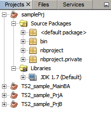

Conteúdo

Para concluir este tutorial, você precisa dos seguintes recursos e softwares.
| Software ou Recurso | Versão Necessária |
|---|---|
| NetBeans IDE | versão 6.9, 7.0, 7.1, 7.2, 7.3 ou 7.4 |
| JDK (Java Development Kit) | versão 6 ou 7 |
Um suporte aprimorado para a importação de projetos do Eclipse está disponível no NetBeans IDE. O assistente Importar Projeto do Eclipse permite que você use o NetBeans para trabalhar com projetos de área de trabalho Java e de aplicações web criadas no Eclipse e MyEclipse.
Após criar um projeto NetBeans de um projeto Eclipse, você pode trabalhar das seguintes maneiras:
Quando você importa um projeto, o IDE analisa os metadados do projeto Eclipse e cria um projeto NetBeans com base nesses metadados. A importação do projeto não impõe alterações na estrutura do projeto Eclipse, portanto isso não interfere no modo em que o projeto funciona no Eclipse.
Depois de ter importado o projeto, você pode usar um dos IDEs do NetBeans e Eclipse, ou ambos, para editar, construir, executar, depurar e criar o perfil do projeto. Se você fizer uma alteração de configuração no projeto Eclipse, você pode sincronizar o projeto NetBeans novamente. Isso permite que você trabalhe em projetos no NetBeans mesmo se todos em sua equipe estiverem trabalhando com o Eclipse. O caminho de construção que você define no Eclipse continua sendo o caminho de construção mestre do projeto.
Para importar um projeto Eclipse para o IDE:
Normalmente, esse projeto já estaria em um espaço de trabalho do Eclipse em seu sistema.
Observação: normalmente, é melhor armazenar os dados do projeto NetBeans dentro das pastas do projeto Eclipse. Na maioria dos casos, isso significa que os metadados do projeto NetBeans irão se referir a códigos-fonte e bibliotecas com os mesmos caminhos que são usados pelos metadados do Eclipse. Portanto, efetuar check-out do projeto de um sistema de controle de versões em máquinas diferentes deve resultar em comportamento similar, tanto no NetBeans quanto no Eclipse.
Consulte Arquivos do Projeto NetBeans a seguir para obter uma relação dos arquivos e pastas criados pelo NetBeans IDE.
Depois de ter concluído o assistente, as caixas de diálogo a seguir devem ser exibidas:
Depois de ter concluído o assistente e ter fechado algumas das caixas de diálogo informativas mostradas acima, os nós dos projetos serão exibidos na janela Projetos.

Se houver referências nos metadados de seu projeto sobre servidores ou outros recursos que o NetBeans não consegue resolver, o nó do projeto será exibido em vermelho. Você pode resolver essas referências imediatamente clicando com o botão direito do mouse no nó do projeto e escolhendo Resolver Problemas de Referência e Resolver Servidor Ausente.
Para outros tipos de ajustes na configuração do projeto, você usa a caixa de diálogo Propriedades do Projeto. Abra a caixa de diálogo Propriedades do Projeto clicando com o botão direito do mouse no nó do projeto e escolhendo Propriedades.
Para obter mais informações sobre a configuração do seu projeto, veja Configurando o Classpath e Outras Definições do Projeto no guia Criando, Importando e Configurando Projetos Java.
Depois de ter importado o projeto no NetBeans, você pode construir e executar o projeto. Todos os artefatos criados a partir dos comandos construir e executar do NetBeans são criados nas pastas build e dist. O NetBeans não substitui a saída criada a partir de ações de construção do Eclipse. Se o projeto Eclipse já tiver pastas build e dist, o projeto NetBeans cria pastas chamadas nbbuild e nbdist e as utiliza para as saídas do comando construir.
A seguir, alguns dos comandos construir e executar disponíveis no menu Executar:
build (ou nbbuild) e dist (ou nbdist) pastas e recria todas as saídas do projeto. Usa o script de construção do NetBeans. Similar ao comando Limpar no Eclipse.nbbuild e nbdist.Para obter mais informações sobre a construção e execução de sua aplicação, bem como sobre a personalização do processo de construção, consulte Criando, Importando e Configurando Projetos Java.
Depois de ter importado o projeto, você encontrará a pasta e os arquivos a seguir em seu sistema:
build.xml ou arquivo nb-build.xml. O script de construção principal do NetBeans para o projeto. Você pode personalizar esse script de acordo com as necessidades de seu projeto. Por default, esse arquivo é chamado de build.xml. Se esse arquivo já existir na pasta do projeto, o script é chamado de nb-build.xml.nbproject. Contém a maioria dos metadados do projeto NetBeans, incluindo recursos que são chamados pelo script de construção principal do NetBeans. Se você marcar essa pasta e o arquivo build.xml ou nb-build.xml em seu sistema de controle de versão, outros usuários poderão abrir o projeto no NetBeans. Essa pasta também contém a pasta private, que contém dados específicos de seu sistema. Essa pasta não deve ter check-in no sistema de controle de versão, pois seu conteúdo variará entre os usuários. Veja Considerações sobre o Controle de Versão a seguir.nbbuild. Quando você construir ou executar seu projeto no NetBeans, os códigos-fonte serão compilados nessa pasta.nbdist. Quando você constrói seu projeto no NetBeans, as saídas distribuíveis do projeto são criadas e colocadas nessa pasta. Tais saídas podem ser arquivos JAR e arquivos WAR.Se o check-out do projeto tiver sido feito em um sistema de controle de versão, as pastas build (ou nbbuild), dist (ou nbdist) e nbproject/private não deverão ter check-in para esse sistema de controle de versão.
Se o projeto estiver sob os sistemas de controle de versão CVS, Subversion ou Mercurial, os arquivos "ignorar" apropriados são criados ou atualizados para esses diretórios quando o projeto é importado.
Embora a pasta nbproject/private deva ser ignorada, a pasta nbproject deve ter check-in no sistema de controle de versão. A pasta nbproject contém metadados do projeto que permitem que outros usuários abram o projeto no NetBeans sem ter que importar o projeto primeiro.
O importador do projeto tem funcionalidades de sincronização. Se o classpath no Eclipse tiver sido alterado desde que foi importado inicialmente, você pode usar a funcionalidade Sincronizar Projetos do Eclipse novamente para atualizar o classpath no projeto NetBeans correspondente.
A ressincronização do projeto é unidirecional, de projetos Eclipse para projetos NetBeans. Se você fizer alterações na estrutura do projeto no NetBeans, essas alterações não serão propagadas para o projeto Eclipse com a funcionalidade de ressincronização. Se você pretende manter tanto o projeto Eclipse quanto o NetBeans, use o projeto Eclipse como projeto "mestre".
O IDe também ressincroniza os projetos automaticamente se as alterações na configuração do Eclipse forem inequívocas e não exigirem sua intervenção. Essa ressincronização automática ocorre logo depois que você abre o projeto. Se a ressincronização exigir sua intervenção, você precisa ressincronizar manualmente o projeto.
Para sincronizar novamente de modo manual os projetos NetBeans com projetos Eclipse:
Observações: quando você ressincronizar um projeto, a ressincronização é realizada em todos os projetos que você importou do espaço de trabalho.
Quando você importa um projeto no NetBeans, pode haver algumas questões que não são automaticamente resolvidas no NetBeans IDE. Para alguns desses problemas, um item do menu, como Resolver Problema de Servidor Ausente, é exibido no menu de contexto do projeto. Outros problemas podem ser resolvidos na caixa de diálogo Propriedades do projeto referente ao projeto importado no NetBeans IDE.
Eis uma lista de problemas de importação comuns e suas soluções.
| Mensagem do Problema | Solução |
|---|---|
| Resolver Problema de Servidor Ausente | Clique com o botão direito do mouse no nó do projeto e escolha Resolver Problema de Servidor Ausente. Em seguida, navegue até o arquivo ou pasta que contém o servidor. |
| Resolver Problema de Referência | Clique com o botão direito do mouse no nó do projeto e escolha Resolver Problema de Referência. Em seguida, navegue até o arquivo ou pasta que contém o recurso que é mencionado no projeto. |
| A plataforma Eclipse para o projeto ProjectName não pode ser usada. Ela é um JRE e o projeto NetBeans requer um JDK. O NetBeans usará a plataforma default. | Caso queira alterar a plataforma que o NetBeans usa para o projeto, escolha Ferramentas > Plataformas e especifique uma plataforma diferente. |
| O projeto Eclipse projectname reivindica usar JDK do diretório "{1}". Mas esse diretório não existe. O NetBeans usará a plataforma default. | Caso queira alterar a plataforma que o NetBeans usa para o projeto, escolha Ferramentas > Plataformas e especifique uma plataforma diferente. |
| O NetBeans não oferece suporte a inclusões/exclusões de código-fonte por raiz de código-fonte como o Eclipse. Elas foram mescladas e é recomendável que você as verifique no painel Código-fonte das propriedades do projeto. | No NetBeans, inclusões e exclusões são declaradas em um local para todo o projeto. Para verificar as inclusões e exclusões no projeto NetBeans, clique com o botão direito do mouse no nó do projeto e, na janela Projetos, escolha Propriedades. Na caixa de diálogo Propriedades do Projeto, selecione a guia Códigos-fonte e, em seguida, clique no botão Inclusões/Exclusões. |
| Falha na importação devido a .... Mais detalhes podem ser encontrados no arquivo de log do IDE. | Você pode abrir o arquivo de log do IDE escolhendo Exibir > Log do IDE. |
| Tipo de projeto desconhecido, ele não pode ser importado. | Você pode importar apenas os seguintes tipos de projeto Eclipse: Projeto Java, Projeto Java de um arquivo Ant existente, Web Estática, Web Dinâmica e Projeto JPA. |
{kind=link}
{kind=link}